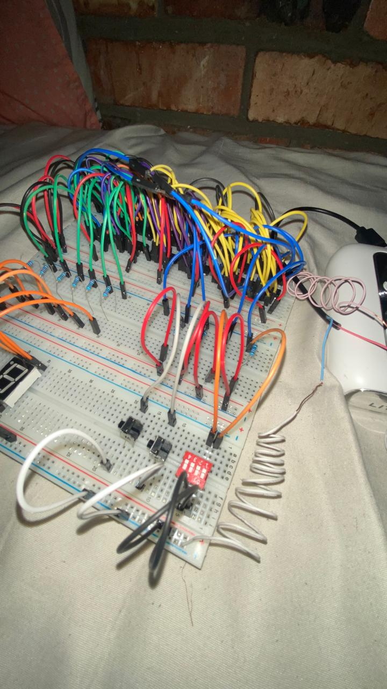

MY PROJECT TOOLKIT
Programming & electronics
My projects explore Java, Python, C, and web technologies, alongside electronics calculations and problem solving.

NOLUTHANDO BASI · COMPUTER ENGINEERING STUDENT
Hi, I’m Noluthando, a computer engineering student exploring how hardware and software work together. Welcome to my portfolio—a growing collection of what I’m learning and building.
Studying at Cape Peninsula University of Technology.
01 / ABOUT ME
I’m studying Computer Engineering at Cape Peninsula University of Technology. This portfolio documents my learning through programming and electronics projects, from terminal games to practical tools.
MY PROJECT TOOLKIT
My projects explore Java, Python, C, and web technologies, alongside electronics calculations and problem solving.
CURRENTLY LEARNING
I’m learning HTML to structure pages and CSS to style them. This portfolio is part of that journey, with more work to share as I grow.
02 / SELECTED WORK
Software projects and engineering case studies.
Explore the work and what I learned.
Electronic component calculator
A desktop calculator for Ohm’s law, resistor and capacitor combinations, LED resistors, voltage dividers, and RC timing.
Validates inputs and rejects nonfinite results. Requires JDK 17 or newer and a graphical desktop.
Explore Circuit DeskCalculate monthly income, expenses, and the remaining balance in South African rand, with exact decimal arithmetic.
Runs with Python 3.10+. Budget entries stay in the current session; they are not saved or uploaded.
Explore the budget calculatorNavigate three maze difficulties using W, A, S, and D. Reach the exit, track your moves, and improve your best score.
Runs in a terminal with Python 3.10+. Best scores are saved locally beside the game.
Explore the maze gameA first-to-three terminal match against a random computer opponent. Ties keep the score unchanged; invalid input is rejected.
Build with a C11 compiler. Automated tests cover every round outcome and match scoring.
Explore the C gameA little progress, every day.
Add, edit, complete, and filter tasks in a responsive to-do app. Progress updates as you work through your list.
Run locally with Node.js 18+. Tasks are saved in the current browser, with no account or cross-device sync.
Explore the to-do appA local student planner for modules, assignments, revision sessions, deadlines, and completion tracking.
Python 3.10+; records persist in a local SQLite database.
Explore Study FlowA desktop Snake game with keyboard controls, scoring, pause, restart, and increasing difficulty.
Windows .NET Framework 4.x; source and executable included.
Explore SnakeA graphical Sudoku game with unique puzzles, pencil notes, hints, undo, and light and dark themes.
Windows desktop app; downloadable release and C++17 source.
Explore Sudoku StudioPlay with a friend or challenge a Minimax computer opponent, with replay and session scores.
Portable terminal game; build with a C11 compiler.
Explore Tic-Tac-Toe
From logic design to verified hardware
I led this CPUT group project as its primary contributor, working across design, simulation, testing preparation and documentation.
Verified hardware, 24 NAND gates and six 74HC00 packages. Eight static netlist cases also passed. A coursework case study with rights reserved.
Explore the ALU case study03 / A LITTLE EXPERIMENT
Meet the NAND gate—the building block of my ALU project. Flip the inputs and see what happens.
See how these gates become an ALU ↗NAND / LIVE LOGIC
The output is on unless both inputs are on.
KEEP IN TOUCH
Explore my code on GitHub or connect with me on LinkedIn to follow my engineering journey.